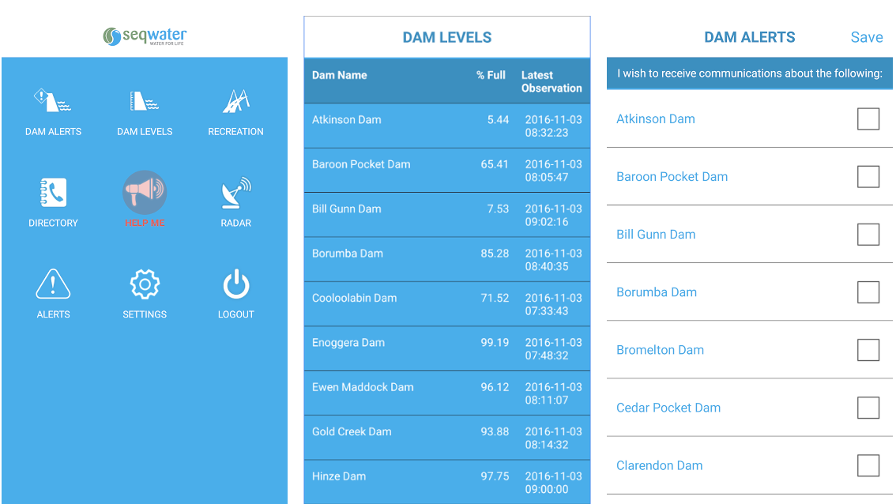
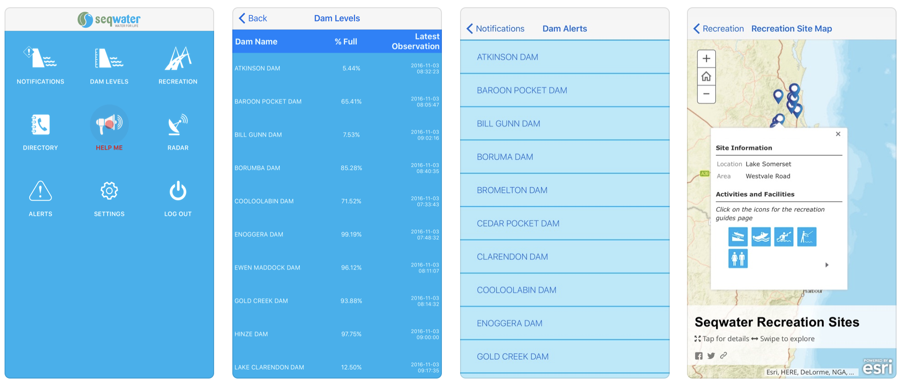
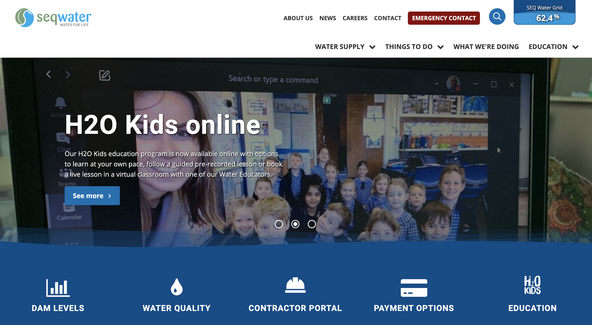
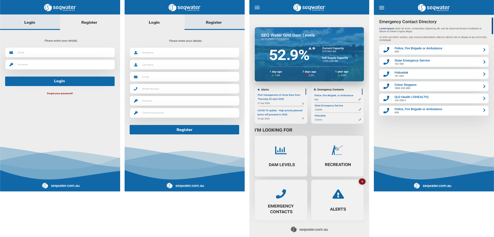
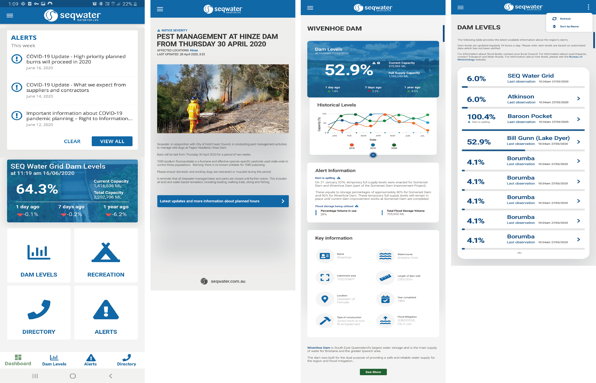

Seqwater
Public Safety and Dam Release Notification Service App
About
Seqwater is the Queensland Government Bulk Water Supply Authority. We are responsible for providing a safe, reliable and affordable bulk drinking water supply for 3.2 million people across South East Queensland. Seqwater provides a free Dam Release Notification service which sends notifications by email, text messages to mobile phones or recorded messages to telephone landlines when dam releases are occurring.


The Challenge
Seqwater's public safety app combines dam release notifications, dam levels information, recreation, safety and lake closure updates and weather alerts. However, the current app provides very basic and unpolished management experience and interface, and have receieved some negative feedback from users. Therefore, our client requested Atech team to redesign and develop the app.

Design Process

